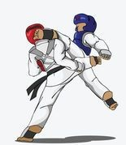

Sports
Sport is generally recognised as system of activities which are based in physical athleticism or physical dexterity.
Sport is governed by a set of rules or customs, which serve to ensure fair competition, and allow consistent adjudication of the winner.
Winning can be determined by physical events such as scoring goals or crossing a line first.
It can also be determined by judges who are scoring elements of the sporting performance, including objective or subjective measures such as
technical performance or artistic impression.
List of Sports:
| Archery:- Archery is the art, sport, practice, or skill of using a bow to shoot arrows. archery has been used for hunting and combat. In modern times, it is mainly a competitive sport and recreational activity. |
|
| Bowling:- Bowling is a target sport and recreational activity in which a player rolls or throws a bowling ball toward pins (in pin bowling) or another target (in target bowling). |
|
| Boxing:- Boxing is a combat sport in which two people, usually wearing protective gloves, throw punches at each other for a predetermined amount of time in a boxing ring. |
|
| Tennis:- Tennis is a racket sport that can be played individually against a single opponent (singles) or between two teams of two players each (doubles). Each player uses a tennis racket that is strung with cord to strike a hollow rubber ball covered with felt over or around a net and into the opponent's court. The object of the game is to maneuver the ball in such a way that the opponent is not able to play a valid return. The player who is unable to return the ball will not gain a point, while the opposite player will. |
|
| Skateboarding:- Skateboarding is an action sport which involves riding and performing tricks using a skateboard, as well as a recreational activity, an art form, an entertainment industry job, and a method of transportation. |
|
| Surfing:- Surfing is a surface water sport in which the wave rider, referred to as a surfer, rides on the forward or face of a moving wave, which usually carries the surfer towards the shore. Waves suitable for surfing are primarily found in the ocean, but can also be found in lakes or rivers in the form of a standing wave or tidal bore. |
|
| Hockey:- Hockey is a sport in which two teams play against each other by trying to manoeuvre a ball or a puck into the opponent's goal using a hockey stick. There are many types of hockey such as bandy, field hockey, ice hockey and rink hockey. |
|
| Figure skating:- Figure skating is a sport in which individuals, duos, or groups perform on figure skates on ice. It was the first winter sport to be included in the Olympic Games, when it was contested at the 1908 Olympics in London. |
 |
| Yoga:- Yoga is a group of physical, mental, and spiritual practices or disciplines which originated in ancient India. |
|
| Karate:- Karate is is a martial art and now is predominantly a striking art using punching, kicking, knee strikes, elbow strikes and open-hand techniques such as knife-hands, spear-hands and palm-heel strikes. |
 |
| Volleyball:- Volleyball is a team sport in which two teams of six players are separated by a net. Each team tries to score points by grounding a ball on the other team's court under organized rules |
|
| Basketball:- Basketball is a team sport in which two teams, most commonly of five players each, opposing one another on a rectangular court, compete with the primary objective of shooting a basketball while preventing the opposing team from shooting through their own hoop. |
 |
| Baseball:- Baseball is a bat-and-ball game played between two opposing teams who take turns batting and fielding. The game proceeds when a player on the fielding team, called the pitcher, throws a ball which a player on the batting team tries to hit with a bat. The objective of the offensive team (batting team) is to hit the ball into the field of play, allowing its players to run the bases, having them advance counter-clockwise around four bases to score what are called "runs". |
|
| High jumping:- The high jump is a track and field event in which competitors must jump unaided over a horizontal bar placed at measured heights without dislodging it. In its modern most practiced format, a bar is placed between two standards with a crash mat for landing. In the modern era, athletes run towards the bar and use the Fosbury Flop method of jumping, leaping head first with their back to the bar. |
|
| Hang gliding:- Hang gliding is an air sport or recreational activity in which a pilot flies a light, non-motorised foot-launched heavier-than-air aircraft called a hang glider. Most modern hang gliders are made of an aluminium alloy or composite frame covered with synthetic sailcloth to form a wing. |
|
| Cycling:- Cycling, also called biking or bicycling, is the use of bicycles for transport, recreation, exercise or sport. People engaged in cycling are referred to as "cyclists","bikers" or less commonly, as "bicyclists".Apart from two-wheeled bicycles, "cycling" also includes the riding of unicycles, tricycles, quadracycles, recumbent and similar human-powered vehicles (HPVs). |
|
| Running:- Running is a method of terrestrial locomotion allowing humans and other animals to move rapidly on foot. Running is a type of gait characterized by an aerial phase in which all feet are above the ground (though there are exceptions). This is in contrast to walking, where one foot is always in contact with the ground, the legs are kept mostly straight and the center of gravity vaults over the stance leg or legs in an inverted pendulum fashion. A feature of a running body from the viewpoint of spring-mass mechanics is that changes in kinetic and potential energy within a stride occur simultaneously, with energy storage accomplished by springy tendons and passive muscle elasticity. The term running can refer to any of a variety of speeds ranging from jogging to sprinting. |
|
| Climbing:- Climbing is the activity of using one's hands, feet, or any other part of the body to ascend a steep topographical object. It is done for locomotion, recreation and competition, and within trades that rely on ascension; such as emergency rescue and military operations. It is done indoors and out, on natural and man-made structures. |
|
| Horseback riding :- horseback riding includes the disciplines of riding, driving, or vaulting with horses. This broad description includes the use of horses for practical working purposes, transportation, recreational activities, artistic or cultural exercises, and competitive sport. |
 |
 |
 |